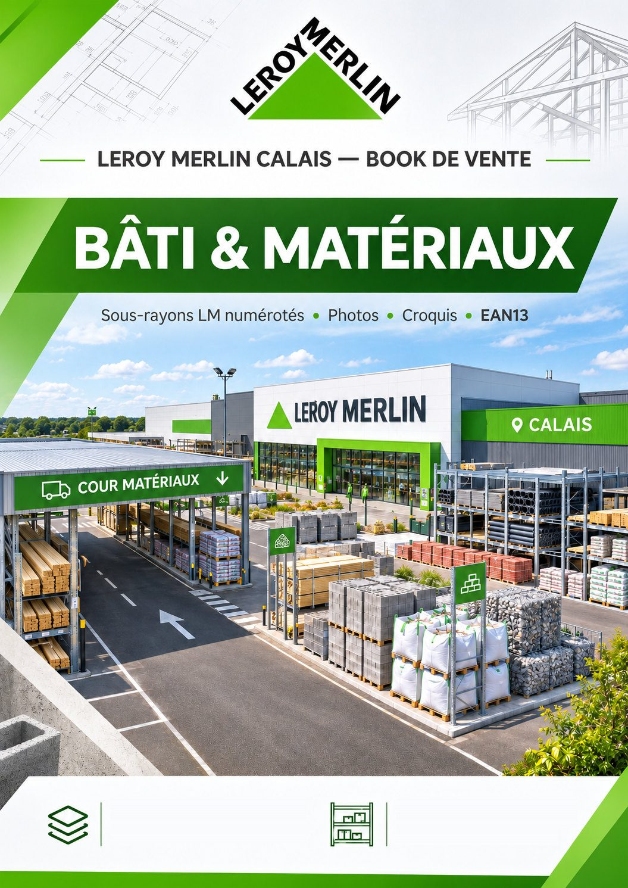
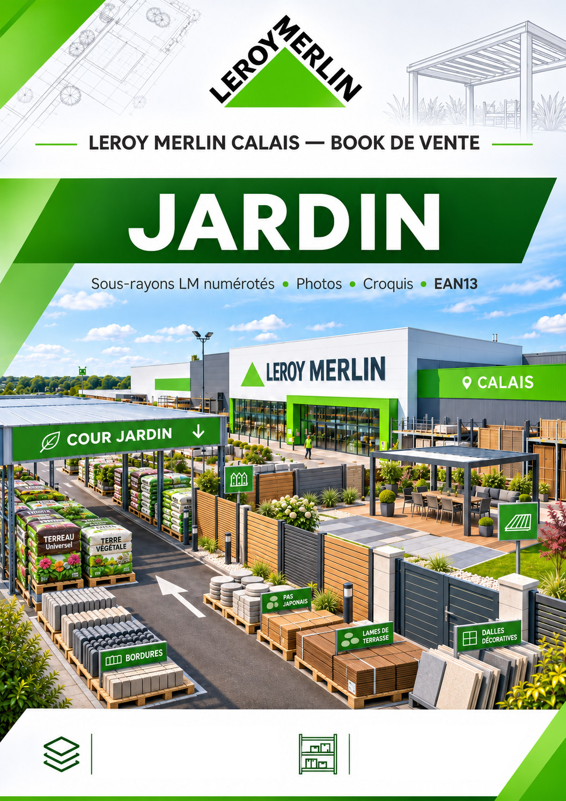

01 · COUR MATÉRIAUX / BÂTI
Book Bâti & Matériaux
50 références · 11 sous-rayons
Deux catalogues indépendants, un pour Bâti / Matériaux et un pour Jardin. Chaque nouvelle référence est classée dans le PDF de son rayon.

50 références · 11 sous-rayons

140 références · 17 sous-rayons
Les PDF sont générés depuis le catalogue partagé : couleurs par sous-rayon, sommaire et intercalaires. Dans la fenêtre d’impression, choisissez « Enregistrer au format PDF ».
Modifiez votre recherche ou choisissez un autre sous-rayon.
Choisissez votre adresse e-mail et un mot de passe personnel pour accéder au Book de vente.
Accès réservé aux adresses professionnelles @leroymerlin.fr. Coordinateurs : Cédric et Sylvie. Les autres collaborateurs peuvent consulter les produits, rechercher par EAN ou photo et générer les PDF, mais ne peuvent ni ajouter, ni modifier, ni supprimer de références. Authentification indépendante du Book.
Catalogue partagé : toute modification validée est visible aux autres utilisateurs après actualisation.
Les deux administrateurs peuvent modifier les références et les PDF. Les autres comptes ont uniquement accès à la consultation.